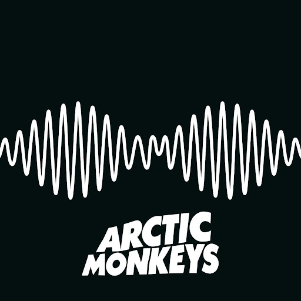

Arctic Monkeys

Arctic Monkeys es una banda británica de indie rock, formada en Sheffield, Reino Unido. El grupo está compuesto por el guitarrista principal y vocalista Alex Turner, el guitarrista Jamie Cook, el baterista Matt Helders y el bajista Nick O'Malley. El bajista original de la banda, Andy Nicholson, dejó el proyecto en 2006 poco después del lanzamiento del álbum debut de la banda.
Los Arctic Monkeys fueron considerados como una de las primeras bandas en hacerse conocidas al público gracias a la difusión de sus canciones por Internet, por lo cual se los catalogó como «la banda que pudo haber cambiado el mercado de la música».4 Esto le valió para que su primer álbum de estudio, Whatever People Say I Am, That's What I'm Not (2006), se convierta en el disco debut británico más vendido en la historia, con más de 300 mil copias vendidas en su primera semana en el mercado.5 Ganó el premio al Mejor Álbum Británico en los Brit Awards 2007. El segundo álbum de la banda, Favourite Worst Nightmare (2007), contó casi con el mismo éxito, ganando también el premio al Mejor Álbum Británico en los Brit Awards 2008. Sus siguientes trabajos serían Humbug (2009), un proyecto más experimental, y Suck It and See (2011).